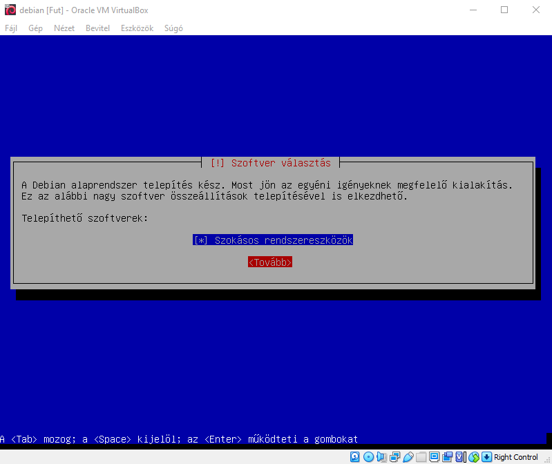
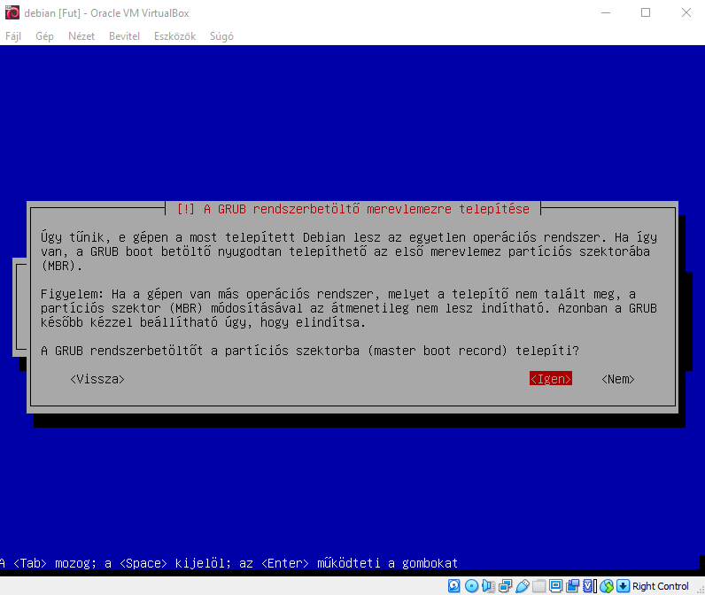
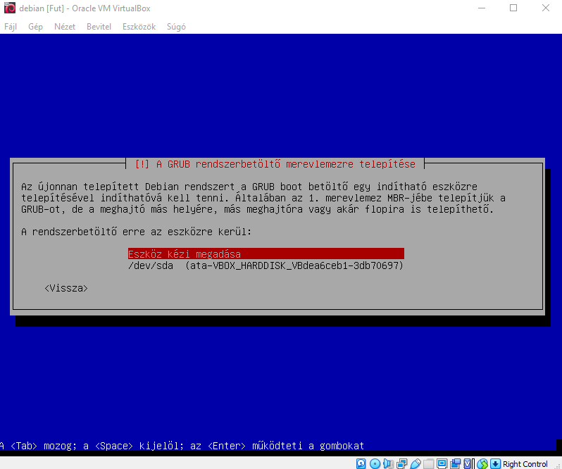
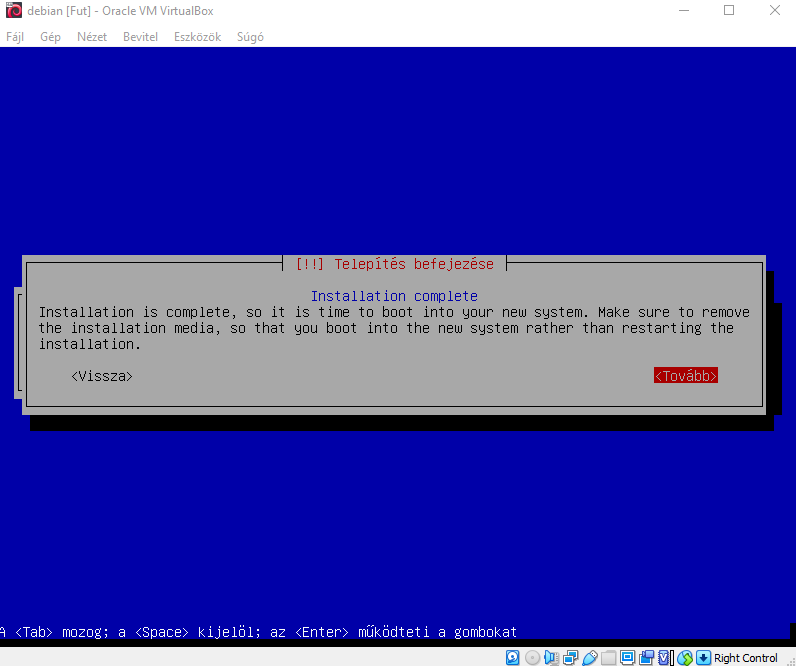
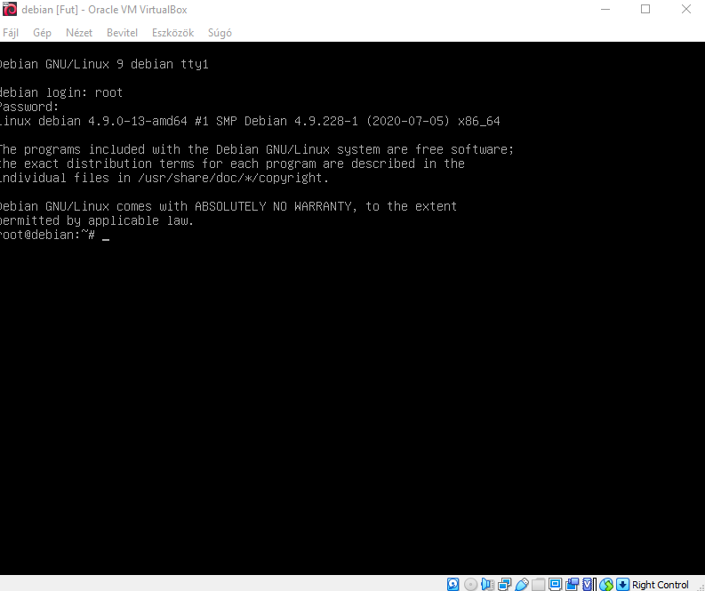

Alaprendszer telepítését követően megkérdezi a rendszer, hogy szeretnénk-e átnézni több CD/DVD-t mivel 1db telepítővel rendelkezik, így ez nem szükséges. Ezt követően megkérdezi, hogy szeretnénk-e részt venni egy felmérésben, ezt aki szeretné elfogadhatja, de nem befolyásolja a rendszer működését. Ezután ki lehet választani az ország hálózati tükrét(Frissítések miatt) a legközelebbit ajánlatos kiválasztani. Majd megkérdezi tőlünk a rendszer, hogy szeretnénk bármiféle plusz csomagot telepíteni és ezeket tetszés szerint kitudjuk választani. Majd menjünk a tovább gombra. Ezután elkezdi felinstallálni a csomagokat, majd kéri, hogy telepítsünk egy GRUB rendszerbetöltőt, ehhez menjünk az igen gombra. Majd kéri, hogy válasszuk ki, hogy melyik partícióra telepítse azt. Ezután amennyiben "Installation Complete" felirat jelenik meg, akkor sikeres volt a telepítés. A tovább gombra kattintva újrabootol a gép majd máris használhatjuk az Operációs rendszerünket.




